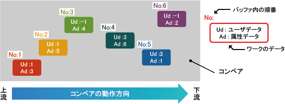
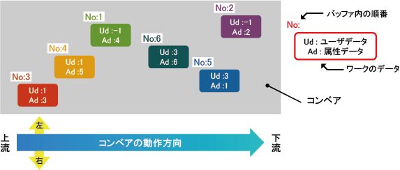
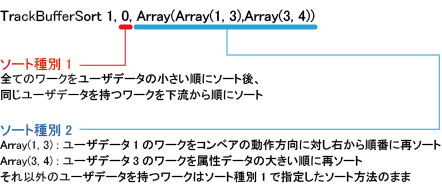
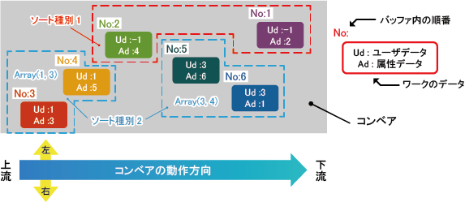

ID : 2285
TrackBufferSort
構文
TrackBufferSort コンベア番号, ソート種別1[, ソート種別2]
指定項目
- コンベア番号
-
使用するコンベア番号（1～16）を整数型データで指定します。
- ソート種別1
-
トラッキングバッファ内の全データを対象にしたソート種別を整数型データで指定します。
電源を切ると、設定したソート種別はデフォルトの設定値"0"に戻ります。ソート種別1では、下記ソート方法の組合せを選択します。
- ユーザデータによるソートの実施有無
- その他のソート方法
各設定値に対する、ソート方法の組合せの内容は下記のとおりです。
設定値 : 0
ユーザデータによるソート ソート方法 有り 下流から順番にソート ユーザデータの小さい順にソートした後、同じユーザデータを持つワークを下流から順にソートします。
デフォルトのソート方法です。TrackBufferSortコマンドを実行しない場合はこのソート方法でソートされます。
ソート結果
ソート種別1に0を設定して実行すると、以下の様な順番にワークはソートされます。
設定値 : 1
ユーザデータによるソート ソート方法 無し 下流から順番にソート 全てのデータを下流から順にソートします。
ソート結果
ソート種別1に1を設定して実行すると、以下の様な順番にワークはソートされます。
設定値 : 2
ユーザデータによるソート ソート方法 有り ワークをコンベアの動作方向に対して左側から順にソート ユーザデータの小さい順にソートした後、同じユーザデータを持つワークをコンベアの動作方向に対して左側から順にソートします。
ソート結果
ソート種別1に2を設定して実行すると、以下の様な順番にワークはソートされます。
設定値 : 3
ユーザデータによるソート ソート方法 無し ワークをコンベアの動作方向に対して左側から順にソート 全てのデータをコンベアの動作方向に対して左側から順にソートします。
ソート結果
ソート種別1に3を設定して実行すると、以下の様な順番にワークはソートされます。

設定値 : 4
ユーザデータによるソート ソート方法 有り ワークを上流から順にソート ユーザデータの小さい順にソートした後、同じユーザデータを持つワークを上流から順にソートします。
ソート結果
ソート種別1に4を設定して実行すると、以下の様な順番にワークはソートされます。
設定値 : 5
ユーザデータによるソート ソート方法 無し ワークを上流から順にソート 全てのデータを上流から順にソートします。
ソート結果
ソート種別1に5を設定して実行すると、以下の様な順番にワークはソートされます。

設定値 : 6
ユーザデータによるソート ソート方法 有り ワークをコンベアの動作方向に対して右側から順にソート ユーザデータの小さい順にソートした後、同じユーザデータを持つワークをコンベアの動作方向に対して右側から順にソートします。
ソート結果
ソート種別1に6を設定して実行すると、以下の様な順番にワークはソートされます。

設定値 : 7
ユーザデータによるソート ソート方法 無し ワークをコンベアの動作方向に対して右側から順にソート 全てのデータをコンベアの動作方向に対して右側から順にソートします。
ソート結果
ソート種別1に7を設定して実行すると、以下の様な順番にワークはソートされます。
設定値 : 8
ユーザデータによるソート ソート方法 有り 属性データの数値の大きい順にソート ユーザデータの小さい順にソートした後、同じユーザデータを持つワークを属性データの数値の大きい順にソートします。
ソート結果
ソート種別1に8を設定して実行すると、以下の様な順番にワークはソートされます。
設定値 : 9
ユーザデータによるソート ソート方法 無し 属性データの数値の大きい順にソート 全てのワークを属性データの数値の大きい順にソートします。
ソート結果
ソート種別1に9を設定して実行すると、以下の様な順番にワークはソートされます。
設定値 : 10
ユーザデータによるソート ソート方法 有り ワークを属性データの数値の小さい順にソート ユーザデータの小さい順にソートした後、同じユーザデータを持つワークを属性データの数値の小さい順にソートします。
ソート結果
ソート種別1に10を設定して実行すると、以下の様な順番にワークはソートされます。
設定値 : 11
ユーザデータによるソート ソート方法 無し 属性データの数値の小さい順にソート 全てのワークを属性データの数値の小さい順にソートします。
ソート結果
ソート種別1に11を設定して実行すると、以下の様な順番にワークはソートされます。
設定値 : -1
ユーザデータによるソート ソート方法 無し 無し 全てのデータのソートを行わず、バッファ内の並びは変化しません。
ソート種別2によるソートのみを行いたい場合に指定します。
- ソート種別2
-
ソート種別1で指定したソートを実施した後に、個別にソートしたいデータとソート方法を指定します。
- トラッキングバッファ内の指定したユーザデータを持つデータを対象にしたソート方法をバリアント(Variant)型の1次配列で指定します。省略可能です。
- ソート種別1で、ユーザデータによるソートを実施しない場合(ソート種別1の設定値 : 1,3,5,7,9,11)、ソート種別2で指定したソートは実施されません。
- 各要素の値は、下記のように「対象となるユーザデータ」と「ソート方法」からなる、要素数が２の整数型データの1次配列で指定します。
ソート種別2 = Array(Array(対象ユーザデータ, ソート方法)[, Array(対象ユーザデータ, ソート方法)[,…]])設定値は以下の種類があります。
| 設定値 | ソート方法 |
|---|---|
| -1 | ソート種別2によるソートは実施しない。 |
| 0 | ワークを下流から順番にソート |
| 1 | ワークをコンベアの動作方向に対し左から順番にソート |
| 2 | ワークを上流から順番にソート |
| 3 | ワークをコンベアの動作方向に対し右から順番にソート |
| 4 | ワークを属性データの大きい順番にソート |
| 5 | ワークを属性データの小さい順番にソート |
実行例
ソート種別2を設定してソートを行う場合は以下の様なプログラムになります。

このコマンドを実行すると以下の様にソートされます。

解説
トラッキングバッファ内のデータの並び順を変更します。まず、第2引数のソート種別1の設定に基づいて、トラッキングバッファ内の全データを対象に、指定したソート種別に基づいてデータの並び替えを行います。
第3引数のソート種別2が設定されている場合、上記のソート処理後、トラッキングバッファ内の、指定したユーザデータを持つグループを対象に、個別にデータの並び順を変更します。
関連項目
TrackBufferDelete、 TrackBufferIndexes、 TrackBufferRead、 TrackCurBufferSort、 TrackPrepareData、 TrackSetSensor、 TrackSetVision、 TrackTargetPos、 コンベアトラッキング用コマンド、 円形トラッキング用コマンド
注意事項
- コンベアおよび円形トラッキング専用のコマンドです。
- トラッキングバッファ内のデータの数が多い場合、データの並び替えに時間がかかる場合があります。
- 電源を切ると、ソート種別1はデフォルトの設定値に戻り、ソート種別2はクリアされます。
用例
- バッファ内の全データを対象にしてソート種別を設定。ソートしたデータの先頭から順次取り出していく。
If I[50] = 1 Then
' コンベアの動作方向に対して左から並べる
TrackBufferSort 1, 3
ElseIf I[50] = 2 Then
' 属性データでソート
TrackBufferSort 1, 9
Else
' デフォルトの設定に戻す (コンベアベクトル方向に沿ってソート)
TrackBufferSort 1, 0
End If
' ソートしたデータの先頭から順次取り出していく
P[10] = TrackTargetPos(1, -1)- ユーザデータごとにソート種別を設定する。
' バッファ全体は今の設定のまま変更しない
' ユーザデータ5のグループ内だけを属性値でソート
' ユーザデータ1のグループ内だけをコンベアの動作方向に対して左から並べる
TrackBufferSort 1, -1, Array( Array( 5, 4 ), Array( 1, 1 ) )- ユーザデータごとのソートを行わない。
' ユーザデータ5のグループ内だけのソートを行わない
' ユーザデータ1のグループ内だけのソートを行わない
TrackBufferSort 1, -1, Array( Array( 5, -1 ), Array( 1, -1 ) )- 特定のユーザデータのグループに個別にソート種別を設定。ソートしたデータの先頭から順次取り出していく。
' バッファ全体はコンベアベクトル方向に沿ってソート
' ユーザデータ5のグループ内だけを属性データでソート
' ユーザデータ1のグループ内だけをコンベアの動作方向に対して左から並べる
TrackBufferSort 1, 0, Array(Array(5, 4), Array(1, 1))
' ユーザデータ5のグループに関して、ソートしたデータの先頭から順次取り出していく
P[10] = TrackTargetPos(1, -1, 5)
'....
' ユーザデータ1のグループに関して、ソートしたデータの先頭から順次取り出していく
P[10] = TrackTargetPos(1, -1, 1)
'....
' コンベアベクトル方向に沿ってソートされたデータの先頭から順に取り出していく
P[10] = TrackTargetPos(1, -1)ID : 2285